4SC000, Q2 2026-2027
Duarte Antunes
Consider a shortest path problem with a terminal state,
\[x_{k+1}=w_k \qquad \text{Prob}[w_k=j\mid x_k=i,\ u_k=\ell]=p_{ij}(\ell) \qquad k\in\{0,1,2,\dots\}\]
and let \(J_\mu(i)\) be the cost of policy \(\mu\) for initial condition \(x_0=i\). Then \(J_\mu(1),\dots,J_\mu(n)\) can be computed by solving the following system of \(n\) linear equations:
\[\begin{aligned} J_\mu(1)&=g(1,\mu(1))+\sum_{j=1}^{n}p_{1j}(\mu(1))J_\mu(j)\\ J_\mu(2)&=g(2,\mu(2))+\sum_{j=1}^{n}p_{2j}(\mu(2))J_\mu(j)\\ &\ \ \vdots\\ J_\mu(n)&=g(n,\mu(n))+\sum_{j=1}^{n}p_{nj}(\mu(n))J_\mu(j)\end{aligned}\]
\[\bar\mu(i)=\underset{u\in U(i)}{\arg\min}\Big[g(i,u)+\sum_{j=1}^{n}p_{ij}(u)J_\mu(j)\Big]\]
satisfies \(J_{\bar\mu}(i)\leq J_\mu(i)\). This is nothing more than a rollout policy with base policy \(\mu\) (Unit 8). It is called policy improvement.
We can then iteratively compute better policies until the improvement step returns the same policy as the previous iteration, meaning there is no point continuing. This is policy iteration.
The procedure must stop, since there are only finitely many policies: if there are \(m\) possible decisions at each of the \(n\) states, there are \(m^n\) policies.
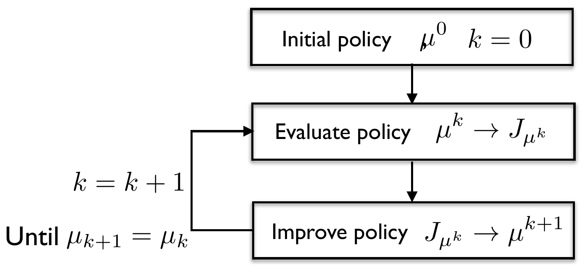
Evaluate policy \(\qquad J_{\mu^k}(i)=g\big(i,\mu^k(i)\big)+\sum\limits_{j=1}^{n}p_{ij}\big(\mu^k(i)\big)J_{\mu^k}(j)\)
Improve policy \(\qquad \mu^{k+1}(i)=\underset{u\in U(i)}{\arg\min}\ g(i,u)+\sum\limits_{j=1}^{n}p_{ij}(u)J_{\mu^k}(j)\)
Consider a discounted cost problem,
\[x_{k+1}=w_k \qquad \text{Prob}[w_k=j\mid x_k=i,\ u_k=\ell]=p_{ij}(\ell) \qquad k\in\{0,1,2,\dots\}\]
and let \(J_\mu(i)\) be the cost of policy \(\mu\) for initial condition \(x_0=i\). Then \(J_\mu(1),\dots,J_\mu(n)\) solve the system of \(n\) linear equations
\[\begin{aligned} J_\mu(1)&=g(1,\mu(1))+\alpha\sum_{j=1}^{n}p_{1j}(\mu(1))J_\mu(j)\\ &\ \ \vdots\\ J_\mu(n)&=g(n,\mu(n))+\alpha\sum_{j=1}^{n}p_{nj}(\mu(n))J_\mu(j)\end{aligned}\]
Evaluate policy \(\qquad J_{\mu^k}(i)=g\big(i,\mu^k(i)\big)+\alpha\sum\limits_{j=1}^{n}p_{ij}\big(\mu^k(i)\big)J_{\mu^k}(j)\)
Improve policy \(\qquad \mu^{k+1}(i)=\underset{u\in U(i)}{\arg\min}\ g(i,u)+\alpha\sum\limits_{j=1}^{n}p_{ij}(u)J_{\mu^k}(j)\)
Stochastic dynamic programming (value iteration) for the inventory control example of Unit 1, with uncertain demand at stage 2, \(\text{Prob}[d_2=0]=0.5\), \(\text{Prob}[d_2=1]=0.5\), leads to the following optimal policy.
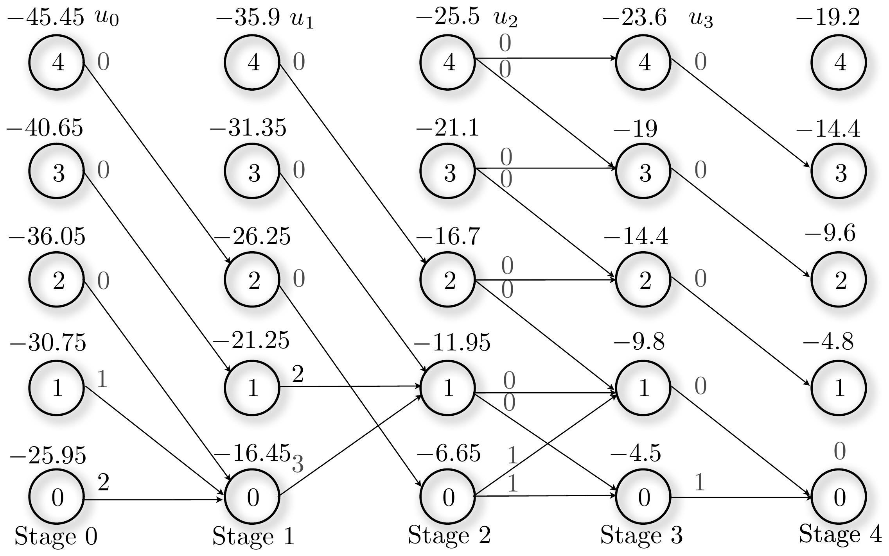
The same policy is obtained with policy iteration.
The initial policy \(\mu^0\) is set to buy nothing, \(\mu^0(x_k,k)=0\). Policy evaluation gives the indicated \(J_{\mu^0}(x_k,k)\).
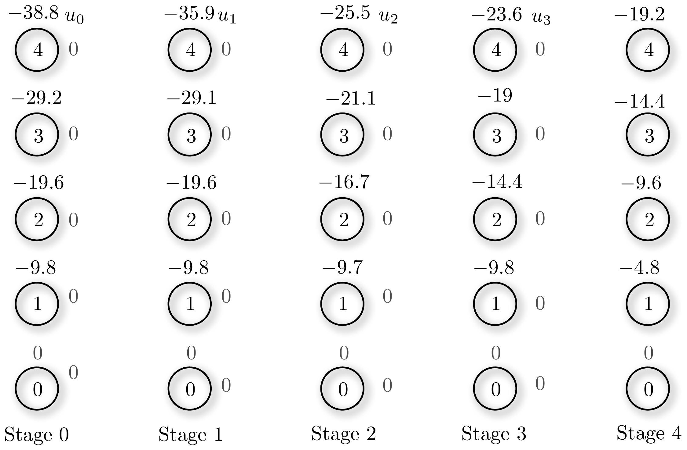
Policy improvement gives the indicated \(\mu^1\). Policy evaluation gives the indicated \(J_{\mu^1}\).
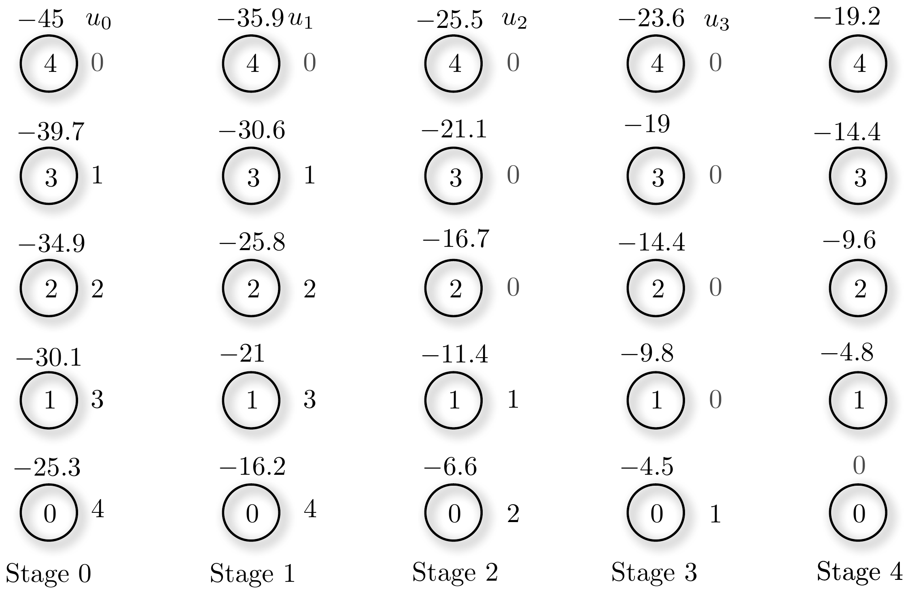
Policy improvement gives the indicated \(\mu^2\). Policy evaluation gives the indicated \(J_{\mu^2}\).
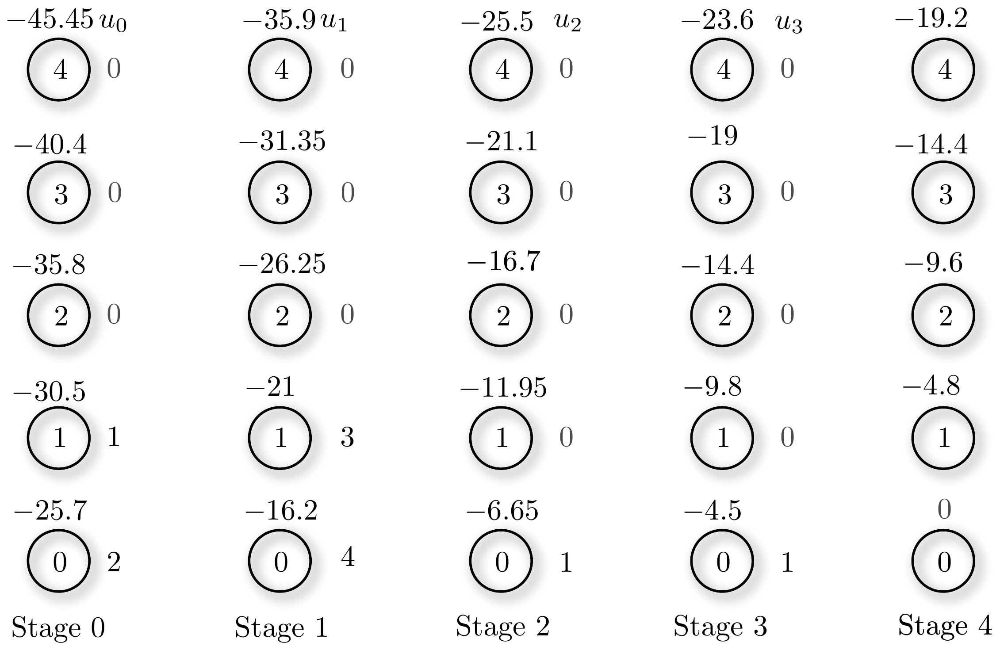
Policy improvement gives the indicated \(\mu^3\). Policy evaluation gives the indicated \(J_{\mu^3}\).
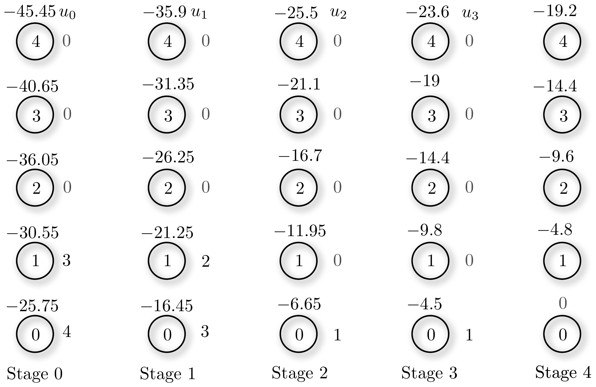
Policy improvement gives the indicated \(\mu^4\). Policy evaluation gives the indicated \(J_{\mu^4}\).
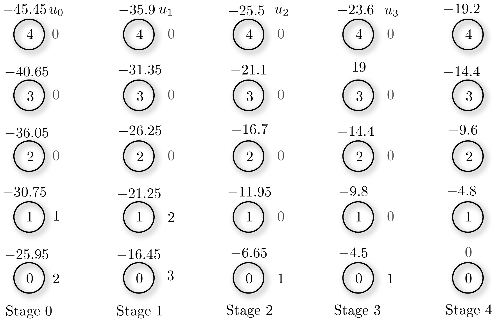
Policy improvement then gives \(\mu^5=\mu^4\) and the algorithm stops, with the optimal policy.
Evaluate
\[\textbf{DC:}\quad Q_{\mu^k}(i,u)=g(i,u)+\alpha\sum_{j=1}^{n}p_{ij}(u)Q_{\mu^k}\big(j,\mu^k(j)\big)\]
\[\textbf{SP:}\quad Q_{\mu^k}(i,u)=g(i,u)+\sum_{j=1}^{n}p_{ij}(u)Q_{\mu^k}\big(j,\mu^k(j)\big)\]
Improve
\[\mu^{k+1}(i)=\underset{u\in U(i)}{\arg\min}\ Q_{\mu^k}(i,u)\]
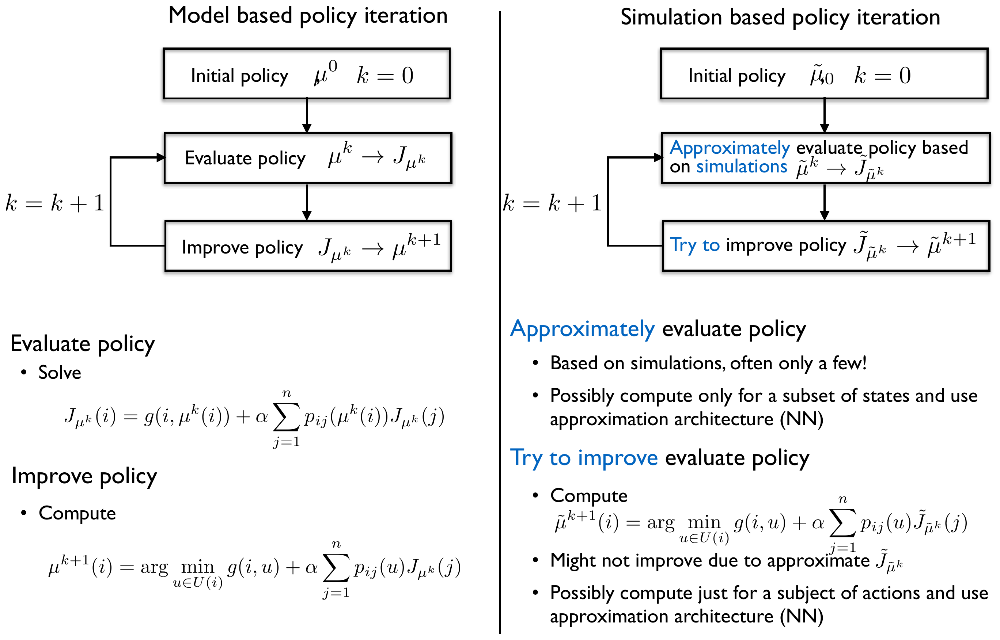
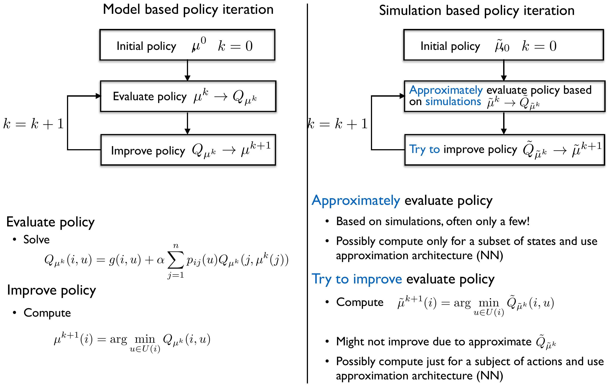
\[\mu^{k+1}(i)=\underset{u\in U(i)}{\arg\min}\ Q_{\mu^k}(i,u)\]
\[\tilde\mu^{k+1}(i)=\underset{u\in U(i)}{\arg\min}\ g(i,u)+\alpha\underbrace{\sum_{j=1}^{n}p_{ij}(u)\tilde J_{\tilde\mu^k}(j)}_{\text{approximated with simulations}}\]
Suppose we run \(M\) simulations/experiments of the system for a given policy \(\mu\),
\[x_0^\ell,x_1^\ell,\dots,x_N^\ell \qquad \ell\in\{1,\dots,M\}\]
(for shortest path problems \(x_N^\ell\) is a terminal state; otherwise run for a long time \(N\) – see the appendix on how to pick \(N\)).
Step 1. Every time \(r\in\{1,2,\dots\}\) a simulation visits a state \(x_k=i\) at time \(k\), compute the return
\[R_r(i)=\sum_{\ell=k}^{N}g(x_\ell,u_\ell), \quad u_\ell=\mu(x_\ell) \qquad \Big(\text{for DC: } R_r(i)=\sum_{\ell=k}^{N}\alpha^{\ell-k}g(x_\ell,u_\ell)\Big)\]
Step 2. The estimate of the cost-to-go of \(\mu\) for state \(i\) is the average of the returns
\[\hat J(i)=\frac{1}{\bar n(i)}\Big(\sum_{r=1}^{\bar n(i)}R_r(i)\Big) \qquad \bar n(i)\ \text{-- \# visits to state } i \text{ in all simulations}\]
We can estimate the Q-factors by interpreting a state-action pair as a state that is visited.
Step 1. Every time \(r\) a simulation visits a state \(x_k=i\) at time \(k\) and an action \(u_k=j\) is taken, compute the return
\[R_r(i,j)=\sum_{\ell=k}^{N}g(x_\ell,u_\ell) \qquad u_\ell=\begin{cases}\mu(x_\ell) & \text{if } \ell>k\\ j & \text{if } \ell=k\end{cases}\]
\[\Big(\text{for DC: } R_r(i,j)=\sum_{\ell=k}^{N}\alpha^{\ell-k}g(x_\ell,u_\ell)\Big)\]
Step 2. The estimate of the Q-factor of \(\mu\) for state \(i\) and action \(j\) is the average of the returns
\[\hat Q(i,j)=\frac{1}{\bar n(i,j)}\Big(\sum_{r=1}^{\bar n(i,j)}R_r(i,j)\Big) \qquad \bar n(i,j)\ \text{-- \# visits to the pair } (i,j)\]
To motivate the temporal difference method, consider an adaptation of the Monte-Carlo method that computes the mean return incrementally, as in Q-learning:
\[\hat J_{t+1}(i)=\hat J_t(i)+\gamma\big(R_r(i)-\hat J_t(i)\big) \qquad \text{when } x_t=i \text{ is visited}\]
where \(\gamma\) can be time-varying but is here assumed constant. Note that we can decompose
\[R_r(i)=\sum_{\ell=k}^{N}g(x_\ell,u_\ell)=g(x_k,\mu(x_k))+\underbrace{\sum_{\ell=k+1}^{N}g(x_\ell,u_\ell)}_{\approx\ \hat J_t(x_{k+1})}\]
and we already have an approximation for the last term at time \(t\)! The TD method uses this approximation, leading to
\[\hat J_{t+1}(x_k)=\hat J_t(x_k)+\gamma\Big(\overbrace{g(x_k,\mu(x_k))+\hat J_t(x_{k+1})-\hat J_t(x_k)}^{\text{temporal difference}}\Big)\]
To simplify notation the time index is omitted and the update is written with an arrow:
\[\hat J(x_k)\leftarrow \hat J(x_k)+\gamma\Big(g(x_k,\mu(x_k))+\hat J(x_{k+1})-\hat J(x_k)\Big)\]
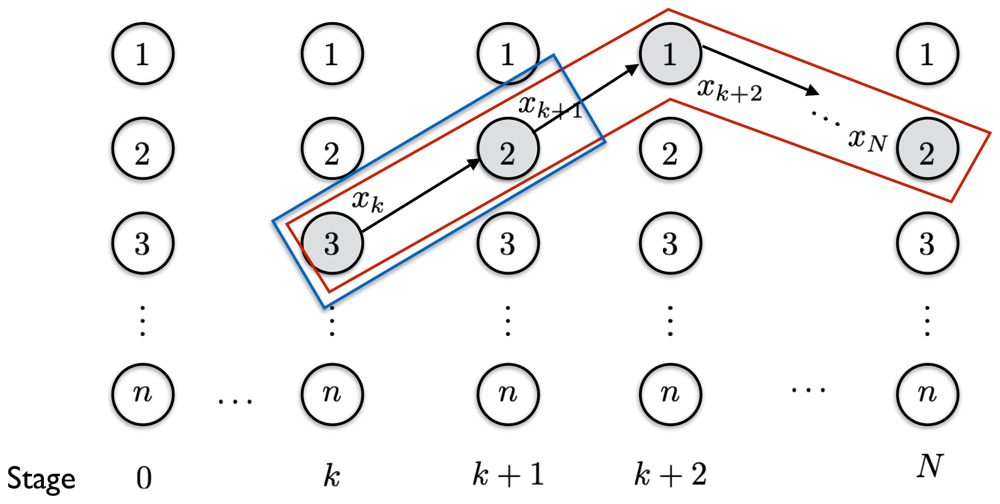
Monte-Carlo return – depends on the full trajectory after \(x_k\); one must wait until the trajectory is over before it can be computed.
TD return – local, only depends on \(x_{k+1}\); can be computed immediately, and reuses previous cost-to-go estimates.
Exploring starts
Add random behaviour to the policy
SARSA is a famous on-policy TD control algorithm:
\[\hat Q(x_k,u_k)\leftarrow \hat Q(x_k,u_k)+\gamma\Big(g(x_k,u_k)+\hat Q(x_{k+1},u_{k+1})-\hat Q(x_k,u_k)\Big)\]
\[\underbrace{\text{State}}_{x_k}-\underbrace{\text{Action}}_{u_k}-\underbrace{\text{Reward}}_{g}-\underbrace{\text{State}}_{x_{k+1}}-\underbrace{\text{Action}}_{u_{k+1}} \quad \text{(SARSA)}\]
where the control policy is an \(\epsilon\)-greedy policy,
\[\text{Prob}[u_k=a]=\begin{cases}1-\epsilon & \text{if } a=\underset{u}{\arg\min}\ \hat Q(x_k,u)\\[4pt] \dfrac{\epsilon}{\#\text{actions at } x_k-1} & \text{otherwise.}\end{cases}\]
With probability \(1-\epsilon\) this policy picks the greedy action, otherwise one of the other available actions with equal probability. \(\epsilon\) is initially large to promote exploration, and is progressively made smaller. Note that this is GPI.
There are many standard environments for testing RL ideas; OpenAI Gymnasium is one of the most prominent, and offers several. One of them is the frozen lake.
SARSA and Q-learning applied to this example have similar performance and lead to similar policies.
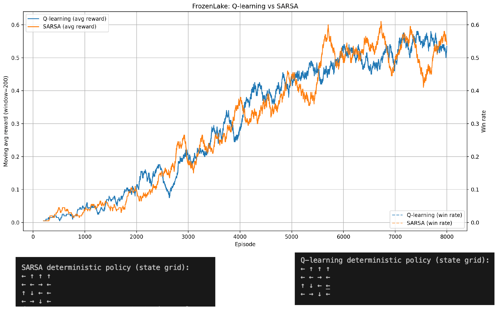
Let us start with a simple example. Suppose we have a random variable \(x\) distributed according to a behaviour distribution \(b=(b_1,\dots,b_n)\), which we can sample, obtaining data \(x_1,\dots,x_K\). We wish to compute the expected value with respect to a target distribution \(t=(t_1,\dots,t_n)\),
\[J=\sum_{i=1}^{n}t_ic_i\]
where \(c_1,\dots,c_n\) are the values \(x\) can take. The difficulty is that our samples come from \(b\), not from \(t\).
Importance sampling provides an unbiased estimate of \(J\) as follows:
\[\bar J=\frac{1}{K}\Big(\sum_{k=1}^{K}\rho_kx_k\Big) \qquad \rho_k=\frac{t_i}{b_i} \ \text{ if } x_k=c_i \qquad b_i>0\]
where \(\rho_k\) is called the importance ratio. In fact
\[\mathbb{E}[\bar J]=\frac{1}{K}\Big(\sum_{k=1}^{K}\mathbb{E}[\rho_kx_k]\Big)=\frac{1}{K}\Big(\sum_{k=1}^{K}\Big(\sum_{i=1}^{n}\frac{t_i}{b_i}c_ib_i\Big)\Big)=\sum_{i=1}^{n}t_ic_i=J\]
These ideas can be applied to cost-to-go estimation in reinforcement learning. Note, though, that for this to work the behaviour policy must ensure that all trajectories are visited. For that it suffices to use an \(\epsilon\)-soft policy: given any deterministic policy, an \(\epsilon\)-soft policy picks its action with probability \(1-\epsilon\) and, with probability \(\epsilon\), any of the other actions with equal probability.
Suppose we wish to estimate the Monte-Carlo return of a target policy \(\pi\) from data generated by a behaviour policy \(\mu\).
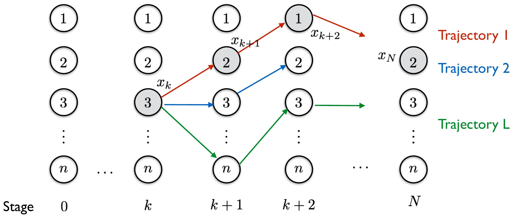
There is a finite number \(L\) of possible trajectories, with costs \(c_j\), \(j\in\{1,\dots,L\}\), that start at \(x_k\). We can compute the probability of trajectory \(j\) under \(\mu\) and under \(\pi\) – denoted \(b=(b_1,\dots,b_L)\) and \(t=(t_1,\dots,t_L)\) – and replace simple averages by weighted averages:
\[\hat J(i)=\frac{1}{\bar n(i)}\Big(\sum_{r=1}^{\bar n(i)}\rho_rR_r(i)\Big) \qquad \rho_r=\frac{t_j}{b_j} \ \text{ if } R_r(i)=c_j\]
How do we compute the probability of a trajectory, and the importance ratio? Suppose both the behaviour and the target policy are stochastic:
\[\textbf{Behaviour}\quad \text{Prob}[u_t=j\mid x_t,\mu]=\mu_j(x_t) \qquad \mu(x_t)=\big(\mu_1(x_t),\dots,\mu_{m(x_t)}(x_t)\big)\]
\[\textbf{Target}\quad \text{Prob}[u_t=j\mid x_t,\pi]=\pi_j(x_t) \qquad \pi(x_t)=\big(\pi_1(x_t),\dots,\pi_{m(x_t)}(x_t)\big)\]
with \(m(x_t)\) the number of possible actions at state \(x_t\). Then the probability of a trajectory is
\[\text{Prob}[x_k=i_k,\dots,x_N=i_N,u_k=j_k,\dots,u_{N-1}=j_{N-1}]=\prod_{\ell=k}^{N-1}\underbrace{P(x_{\ell+1}=i_{\ell+1}\mid x_\ell=i_\ell,u_\ell)}_{\text{depends on the model}}\underbrace{P(u_\ell=j_\ell\mid x_\ell=i_\ell)}_{\text{depends on the policy}}\]
The importance ratio therefore depends only on the policies, not on the model – so we can compute it:
\[\frac{\prod_{\ell=k}^{N-1}P(x_{\ell+1}=i_{\ell+1}\mid x_\ell=i_\ell,u_\ell)\,\pi_{j_\ell}(i_\ell)}{\prod_{\ell=k}^{N-1}P(x_{\ell+1}=i_{\ell+1}\mid x_\ell=i_\ell,u_\ell)\,\mu_{j_\ell}(i_\ell)}=\prod_{\ell=k}^{N-1}\frac{\pi_{j_\ell}(i_\ell)}{\mu_{j_\ell}(i_\ell)}\]
One important bottleneck of importance sampling is that rare events – a small denominator in the importance ratio – have a large influence. Weighted importance sampling mitigates this.
Weighted importance sampling
\[\hat J(i)=\frac{1}{\sum_{r=1}^{\bar n(i)}\rho_r}\Big(\sum_{r=1}^{\bar n(i)}\rho_rR_r(i)\Big)\]
Ordinary importance sampling
\[\hat J(i)=\frac{1}{\bar n(i)}\Big(\sum_{r=1}^{\bar n(i)}\rho_rR_r(i)\Big)\]
Weighted importance sampling is preferred in applications.
Another example from OpenAI Gymnasium, used here to compare on-policy with off-policy learning.
The optimal policy is computed with DP, and an \(\epsilon\)-soft version of it is then used as the behaviour policy; the target policy is the optimal policy itself.
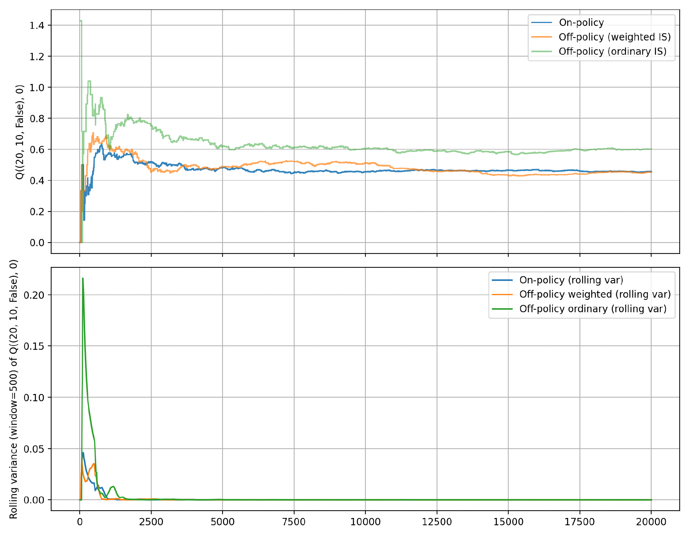
As expected, the off-policy variance – plotted here for one state – is significantly higher than the on-policy variance; the weighted version performs quite well.
To summarize:
For policy evaluation of \(\mu^k\) we can start at many initial states and, for each, run several simulations of large length \(N\) with \(u_k^s=\mu^k(x_k^s)\), then use Monte-Carlo.
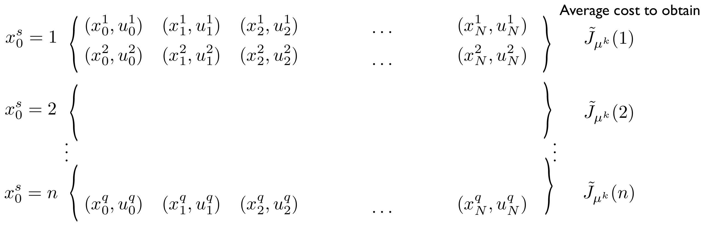
(With Q-factors this would correspond to starting at several state-action pairs \((x_0^s,u_0^s)\).)
If \(N\) is large we can, however, reuse a single simulation to compute estimates for several of the states visited at early stages:
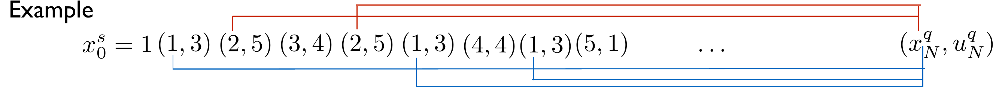
How should \(N\) be chosen?
4SC000 – Optimal Control and Reinforcement Learning